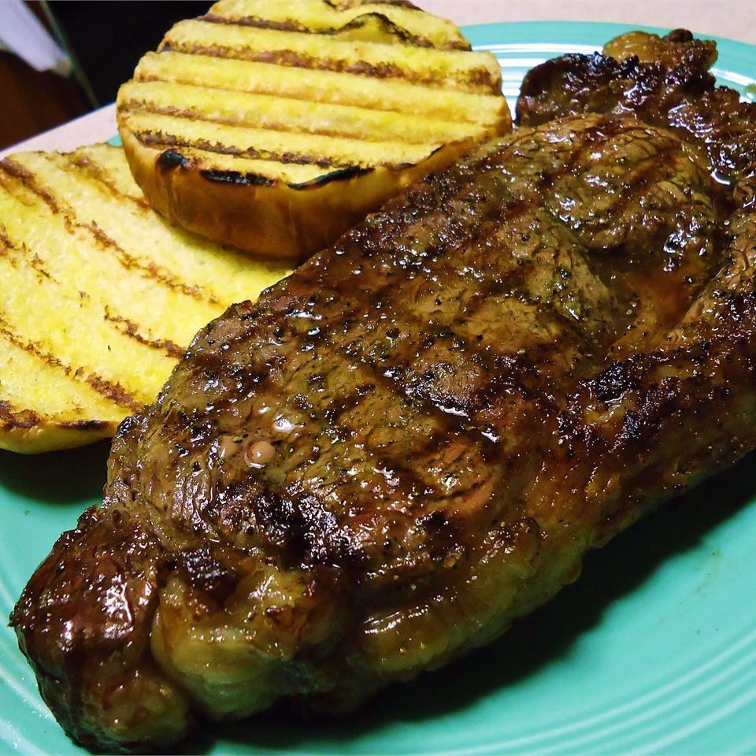

Ribeye steak
bourbon street Ribeye steak
Ingredients
- 1 cup water
- 2/3 cup bourbon whiskey
- 1/2 cup soy sauce
- 3 tablespoons Worcestershire sauce
- 2 tablespoons lemon juice
- 4 (6 ounce) beef rib-eye steaks
Steps
- Whisk together the water, bourbon whiskey, soy sauce, brown sugar, Worcestershire sauce, and lemon juice in a bowl, and pour into a plastic zipper bag. Add the rib-eye steaks, coat with the marinade, squeeze out excess air, and seal the bag. Marinate in the refrigerator for 8 hours or overnight.
- Preheat an outdoor grill for high heat, and lightly oil the grate.
- Remove the rib-eye steaks from the marinade, and shake off excess. Discard the remaining marinade. Grill the steaks on high, 1 to 2 minutes per side, to sear the meat. Move the steaks to a cooler part of the grill and cook for an additional 2 to 3 minutes per side, if desired.